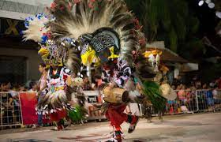
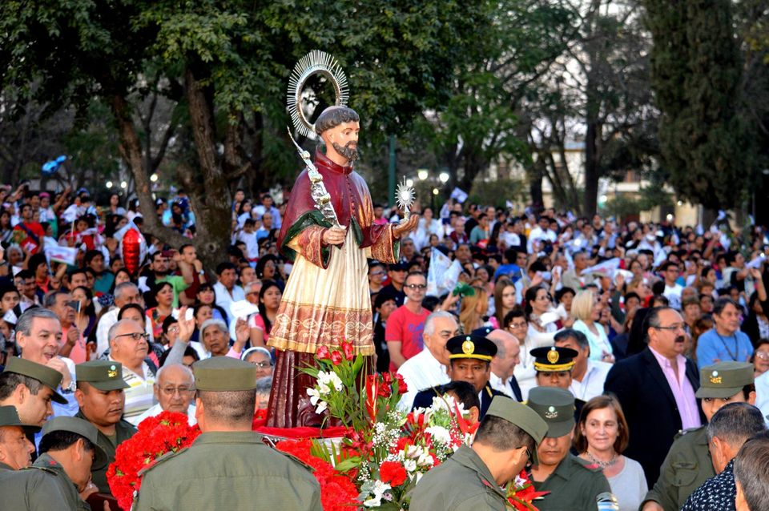
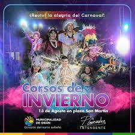
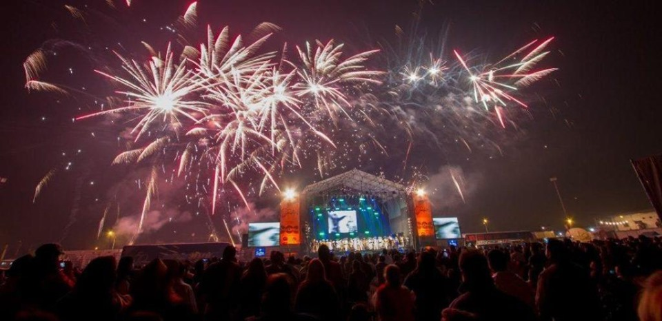
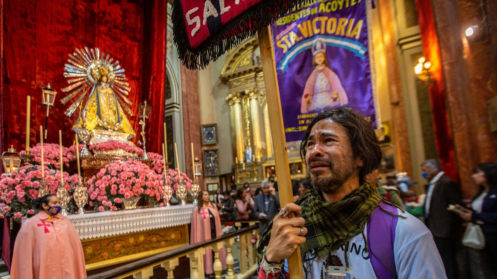
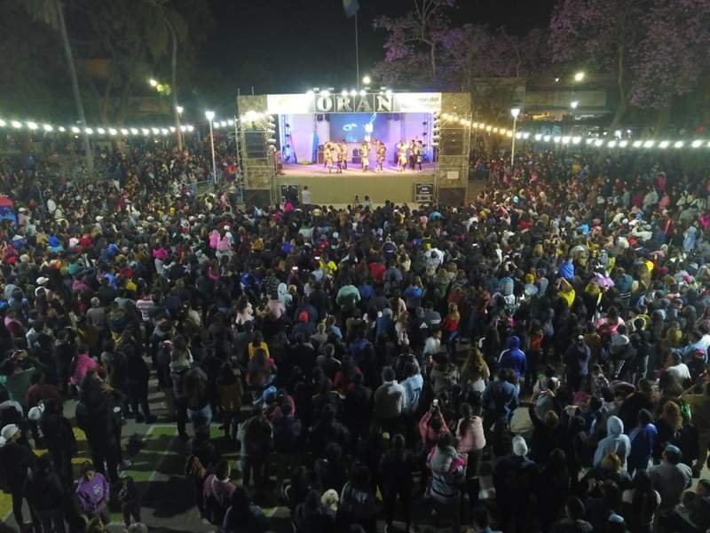

Calendario
Enero (+)
Enero

A partir del 29 de Enero
Los Corsos Color de Orán son de los más famosos de la provincia de Salta. La ciudad de Orán ofrece los Corsos Color para celebrar el carnaval. Cada año las diferentes comparsas ofrecen un colorido espectáculo que convoca a miles de espectadores
Febrero (+)
Febrero
1 Febrero hasta 20 de febrero
Continua con la fiesta a todo color de los corsos mas importantes de la provincia!
21 de Febrero carnaval!
Disfruta de los carnavales mas coloridos de la provincia en los distintos eventos que se realizan a lo largo y ancho de toda la ciudad!

Marzo
Marzo
Proximamente
Abril (+)
Abril
2 de Abril al 8 de Abril
En conjunto todas las parroquias de la ciudad se convocan para realizar el traslado del Cristo Yacente hasta la Cruz Mayor ubicada en el Hospital San Vicente de Paul, lugar en donde se realizará la concentración para la posterior peregrinación hacia la Iglesia Catedral, culminando con la celebración de la Santa Misa Pueyrredón esq. Pizarro hasta 9 de Julio esq. Pellegrini.
Mayo
Mayo
Proximamente
Junio
Junio
Proximamente
Julio (+)
Julio
17 de Julio al 31 de Julio
Disfruta de las vacaciones de invierno en Orán con distintas actividades organizadas por la municipalidad
Agosto (+)
Agosto
29, 30 Y 31 Festi Orán
Orán recibe su cumpleaños con un gran festival folclórico. Miles de salteños disfrutaran de la noche del Festi Orán, organizado para festejar el aniversario fundacional de San Ramón de la Nueva Orán, que además celebra sus fiestas patronales en honor a San Ramón Nonato.
Septiembre (+)
Septiembre
Fiesta del milagro en Salta
La Fiesta del Milagro, considerada una de las manifestaciones de fe más importantes de Argentina y que tras dos años de restricciones por la pandemia vuelve a la normalidad, posee una larga historia y sus orígenes se remontan a la fundación de Salta, en 1582, cuando el fray Francisco de Victoria se comprometió a enviar una imagen del Cristo a la iglesia matriz, de donde la sacaron en procesión tras un terremoto que en septiembre de 1692 provocó la desaparición de la ciudad de Esteco y que se sintió en la capital salteña.
Octubre
Octubre
Proximamente
Noviembre
Noviembre
Proximamente
Diciembre (+)
Diciembre
Fiestas!
Diciembre en Orán esta repleto de peñas y festivales para todo tipo de publico!
